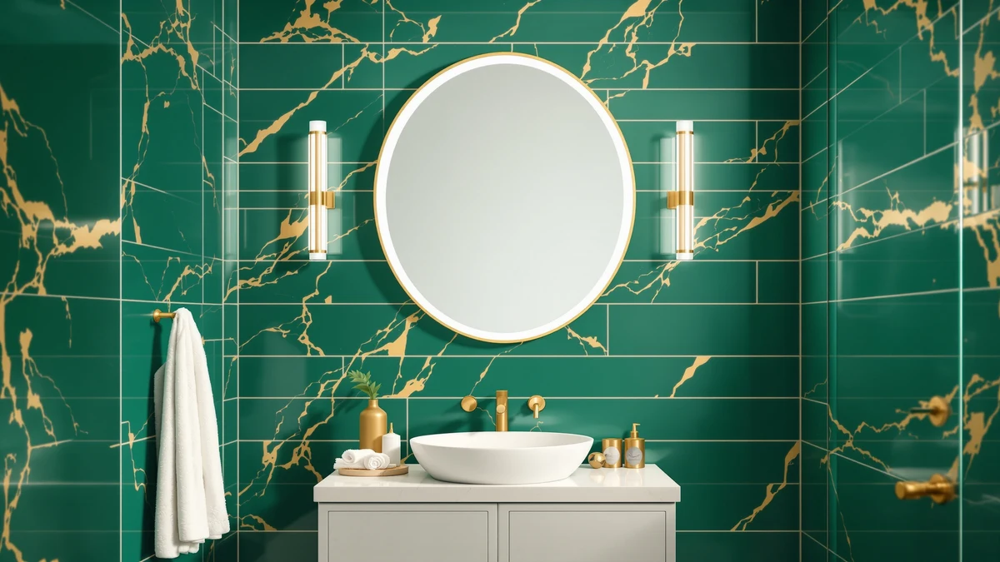

How Often to Clean Bathroom Mirrors: Complete Guide (2026)
Prices and picks verified as of October 2026. Independent, reader-supported reviews.


Things to Know Before You Buy
- Most households need a quick wipe weekly and a full glass-cleaner pass every two weeks. Bathrooms with heavy steam or multiple daily users often need both more frequently.
- Hard water and toothpaste splatter cause most of the visible buildup, not dust. A mirror near the sink attracts spots faster than one over a separate vanity across the room.
- Paper towels leave lint and micro-scratches on glass over time. A microfiber cloth gives a streaker-free finish and lasts for years.
- Ammonia-based cleaners can dull metallic, antique, or tinted mirror finishes. Check the frame material before you reach for a strong glass cleaner.
- A frameless or slim-frame mirror, like the DUMOS 24x36 below, has fewer seams where grime collects, which cuts down on how often you need a deep clean.
How often to clean bathroom mirrors depends mainly on two things: how much steam your bathroom traps and how many people use the sink in front of it. A single-user bathroom with good ventilation can go two weeks between full cleanings. A shared family bathroom with no exhaust fan running during showers often needs a wipe every few days to stay clear.
A workable baseline for most homes looks like this: a 30-second wipe of the high-touch area once a week, and a full glass-cleaner treatment of the whole surface every two weeks. That schedule keeps toothpaste flecks, hairspray film, and water spots from building into a haze you can only fix with a heavier scrub. Households with kids, hard water, or a bathroom near the kitchen for guests tend to land on the shorter end of that range.
Mirrors get dirty at different rates depending on where they sit in the bathroom, and the right cleaning routine depends on your own habits, not some generic rule. Get the technique wrong, though, and a mirror can end up looking worse after cleaning than before you touched it.
What You Need to Know
The honest answer to how often you should clean a bathroom mirror is "it depends on what's landing on it." Steam from a hot shower carries dissolved minerals, soap residue, and skincare oils into the air, and all of that settles on the nearest cold surface, which is usually the mirror. Run an exhaust fan during and after every shower and that buildup slows down considerably. Skip the fan and you'll see a film within a day or two, even in a bathroom nobody considers particularly dirty.
Toothpaste splatter is the other major factor, and it has nothing to do with humidity. Anyone who brushes their teeth standing close to the mirror leaves small white specks that dry into a chalky residue within minutes. If that describes your household, a daily 10-second wipe around the sink-level portion of the mirror prevents the kind of dried-on spots that need scrubbing later.
Hard water adds a third layer. Minerals in tap water leave faint spots wherever water splashes and dries on glass. Homes on well water or in regions with hard municipal water typically need a vinegar-based cleaning pass more often than homes with softened water, regardless of how often anyone showers.
Put those three factors together and you get a realistic range: light use with good ventilation and soft water can stretch to once every two weeks, while heavy use, poor ventilation, and hard water can push the real frequency closer to twice a week.
Types and Categories
Not every bathroom mirror needs the same attention, and splitting your home's mirrors into a few categories makes the whole question of how often to clean bathroom mirrors easier to answer. A primary bathroom mirror, the one over the main sink used for brushing teeth and applying skincare products, sits at the top of the list. It collects splatter and oil daily and benefits from a quick wipe several times a week.
A guest bathroom or powder room mirror sees far less direct contact. Dust and the occasional fingerprint are the main issues, so a wipe every couple of weeks, or before guests arrive, usually keeps it presentable.
Mirrors mounted directly across from or next to a shower, with no door or curtain fully blocking the steam, fall into their own category. These fog over and collect condensation residue faster than any other mirror in the house, and they often need cleaning twice as often as a mirror positioned farther from the water source.
Framed mirrors with wood, metal, or painted trim need a slightly different routine than frameless models like the PERFNIQUE irregular wall mirror. The frame itself traps dust and moisture at the seam where it meets the glass, so it needs a separate pass with a dry or barely damp cloth in addition to the glass cleaning.
How to Choose
Building a cleaning schedule that actually fits your bathroom starts with watching it for a week before you commit to a routine. Note how fast the mirror fogs after a shower, whether spots appear near the sink by the next morning, and how many people use that bathroom daily. Those three observations tell you more than any generic rule.
If your bathroom has a working exhaust fan and you run it for at least 15 minutes after every shower, you can likely stretch your full cleaning to once every two weeks, with a quick wipe in between if toothpaste splatter is an issue. If you don't have a fan, or the fan is weak, plan on a full clean weekly at minimum, since trapped steam accelerates mineral buildup and mildew near the mirror's edges.
Household size matters as much as ventilation. A single person who showers once a day and brushes teeth twice puts far less on a mirror than a family of four sharing one bathroom in the morning rush. Count the daily touches, not just the showers, when you're deciding how often to clean a bathroom mirror in your specific home.
Water hardness is worth checking too. If you already notice spots on shower glass or faucets, your tap water is likely hard, and your mirror will show the same mineral spotting. In that case, add a vinegar-and-water rinse to your routine every other cleaning to dissolve mineral deposits before they etch into the glass.
Finally, factor in the mirror itself. A large mirror over a double vanity has more surface area exposed to steam and splatter than a small mirror over a single sink, so it often needs the same attention in less time simply because there's more glass for residue to land on.
Common Mistakes to Avoid
Using paper towels is the most common mistake, and it's an easy habit to break. Paper towels shed fibers and can leave fine scratches on glass with repeated use, especially once grit from hard water gets trapped in the paper. A microfiber cloth costs a few dollars and holds up for years without scratching the surface.
Spraying cleaner directly onto the glass near an LED or lit mirror risks moisture seeping into the light components along the frame edge. Spray the cloth first, away from the mirror, then wipe. This small change protects the electronics on lit mirrors without sacrificing the clean.
Skipping the edges and corners leaves a buildup that eventually turns into a dark ring you can see from across the room. Wipe the full perimeter of the glass, not just the center you look at most, during every full cleaning pass.
Wiping in wide circles instead of straight lines tends to push residue around rather than lift it off, leaving faint swirl marks once the glass dries. Vertical strokes followed by horizontal strokes with a dry section of the cloth remove far more residue and dry without streaks.
Cleaning a mirror while it's still warm from steam causes the cleaner to evaporate before it can lift the residue, which leaves streaks behind. Wait five to ten minutes after a shower, or clean before you shower instead of right after.
Care and Maintenance
A simple two-step routine covers how often to clean bathroom mirrors without turning it into a chore. For the weekly quick wipe, dampen a microfiber cloth with plain water and remove visible splatter near the sink area. This takes under a minute and prevents toothpaste and soap residue from drying into a harder stain.
For the full biweekly clean, spray an ammonia-free glass cleaner, or a mix of equal parts white vinegar and water, onto a cloth rather than the glass itself. Wipe the entire surface top to bottom, then buff dry with a second, clean microfiber cloth to prevent streaking as the liquid evaporates.
Frame care runs on a slower clock. Wood and painted metal frames need a dry dusting monthly and an occasional wipe with a barely damp cloth to prevent moisture from seeping into seams, since trapped humidity is what causes frames to warp or peel over a year or two of bathroom use.
If your mirror has demister wiring or LED lighting built in, keep liquid away from the edges entirely and clean those models with a dry or near-dry cloth. Owners of lit mirrors consistently report that keeping moisture off the frame edge, rather than the glass itself, is what determines how long the lighting lasts.
Our Top Picks
If your current mirror has a thick frame or deep seams that make cleaning harder than it should be, replacing it changes how often you need to clean in the first place. These three keep upkeep simple because of how the glass meets the frame or wall.

Editor’s Pick
DUMOS 24"x36" Wall Mirror Bathroom
A frameless 24x36 mirror with a polished edge and no frame channel to trap moisture, so a weekly wipe is usually all it needs.
$36.98
Check Price on Amazon
Best Value
PERFNIQUE Irregular Asymmetrical Wall Mirror
An asymmetrical design with a continuous curved edge instead of corners, which gives grime fewer places to collect between cleanings.
$56.08
Check Price on Amazon
Premium Choice
SCWF-GZ 20x30 Oval Mirror Round
A slim metal frame sits flush against the oval glass, leaving a narrow seam that wipes clean in one pass instead of needing a separate frame cleaning.
$39.99
Check Price on AmazonFrequently Asked Questions
How often should you clean a bathroom mirror?
Why does my bathroom mirror get dirty so fast?
Is vinegar safe for cleaning a bathroom mirror?
What's the best cloth for cleaning a bathroom mirror?
Can you clean an LED bathroom mirror the same way as a regular one?
Verdict
How often to clean bathroom mirrors isn't a single fixed number. It's a range shaped by ventilation, household size, water hardness, and how close the mirror sits to your shower. A weekly wipe and a biweekly full clean cover most homes, but a steamy bathroom with no exhaust fan or a family sharing one sink will land on the more frequent end of that range. Watch your own mirror for a week, track how fast spots and film appear, and build your schedule around what you actually see rather than a generic rule. If a thick frame or deep seams make your current mirror harder to clean than it should be, a frameless option like the DUMOS 24x36 gives residue fewer places to hide, so you'll scrub less and keep the glass clear longer between cleanings.